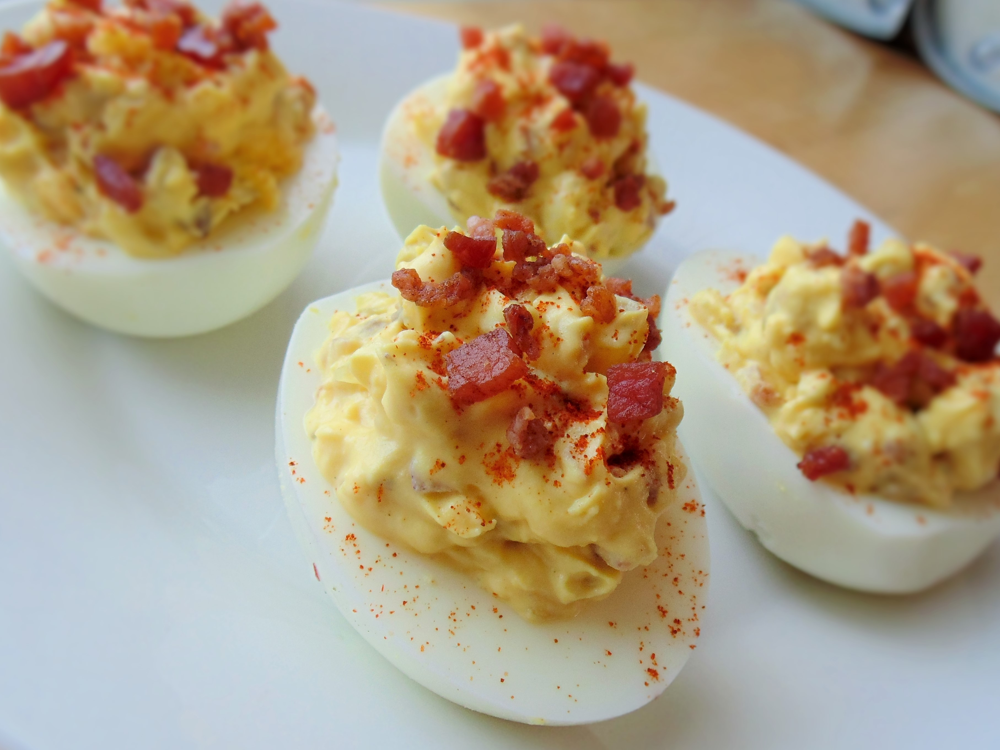

Simply the Best Deviled Eggs

Description
A hard-boiled egg in which the yolk is removed and blended with other
ingredients such as mayonnaise, mustard, and seasonings. After cooking hard-cooked
eggs, the shells are removed, the egg white is halved, and the yolks are
removed. ... Deviled eggs may also be referred to as stuffed eggs.
Ingredients
- 15 jumbo eggs
- ¾ cup cooked and chopped bacon, divided
- ⅓ cup minced onion
- 3 tablespoons dill pickle relish
- 3 tablespoons mayonnaise
- 2 teaspoons prepared yellow mustard
- 2 teaspoons bacon drippings
- 1 pinch salt and ground black pepper
- 1 teaspoon paprika
Steps
- Place eggs in a saucepan and cover with water.Bring to a boil;
- Remove from heat and let eggs stand in hot water for 15 minutes;
- Remove eggs from hot water.
- Cool under cold running water;
- Peel eggs;
- Slice each egg in half lengthwise;
-
Mix 1/2 cup bacon, onion, dill pickle relish, mayonnaise, mustard, and
bacon grease with the egg yolks using a fork;
- Stir in salt and black pepper;
- Scoop yolk mixture into 24 of the egg white halves;
- Sprinkle paprika and remaining 1/4 cup bacon on top!